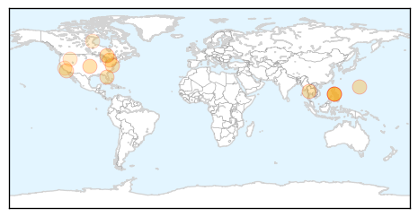
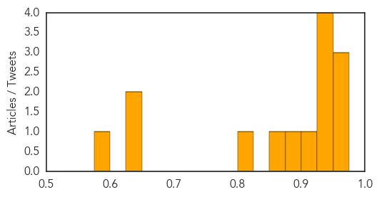
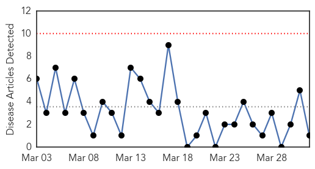
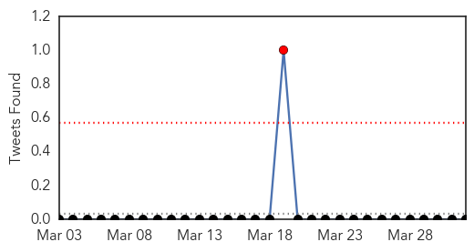

Measles
30-Day Web Trend
0 alerts, 0 warnings

30-Day Twitter Trend
0 alerts, 0 warnings

Article Locations
Article Confidences
Top Articles:
- 0.969
- Measles outbreaks prompt medical chief to issue travel warning
- 0.962
- The Belleville Intelligencer
- 0.950
- Measles outbreaks prompt vaccination call
- 0.950
- Measles outbreaks prompt health officials to remind people to get vaccinated
- 0.941
- Measles outbreak confirmed in Hamilton
- 0.940
- Measles — are you at risk? – Manitoulin Expositor
- 0.936
- Do you need to get a measles shot? What you need to know
- 0.918
- Measles Cases in Canada Growing, Health Officials Urge National Vaccine Registry
- 0.897
- Washington measles outbreak linked to B.C.
- 0.857
- Health officials on high alert after Measels outbreak in Californa - Story
- 0.821
- Measles outbreaks in NYC, Orange County spotlight risks even for vaccinated
- 0.637
- Measles Outbreak: California Outbreak Is the Worst in 2 Decades Video
- 0.626
- Stay cool this summer
- 0.579
- MMR vaccination shouldn't be on opt-in basis
Top Tweets:
-
No tweets found for Apr 01, 2014
Dengue Fever
30-Day Web Trend
0 alerts, 0 warnings

30-Day Twitter Trend
4 alerts, 0 warnings

Article Locations
Article Confidences

Top Articles:
Top Tweets:
-
No tweets found for Apr 01, 2014